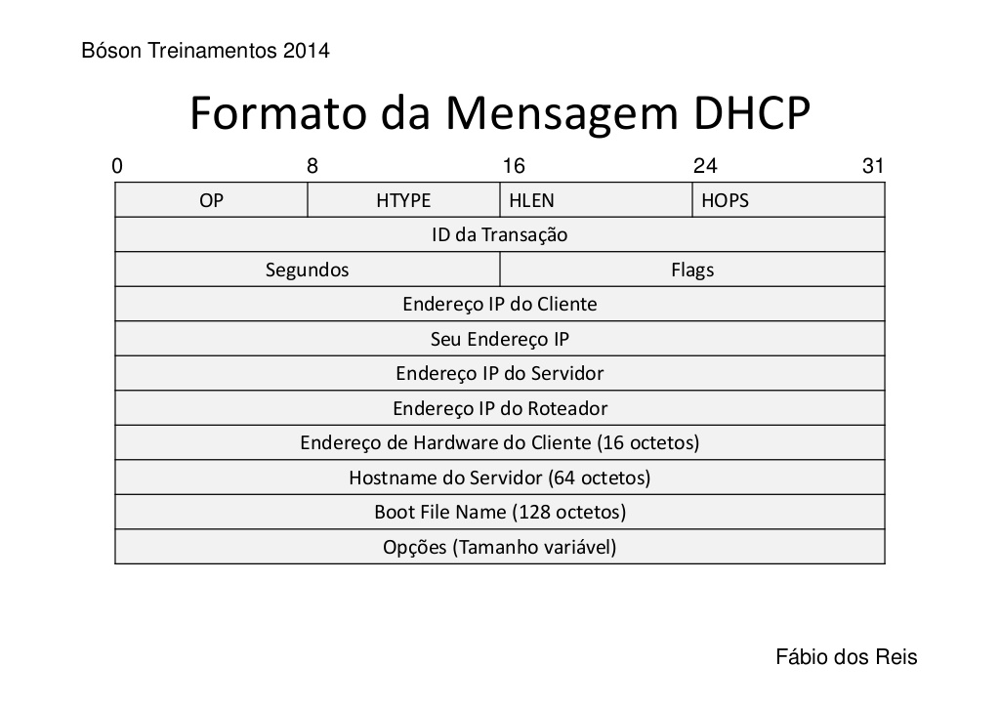
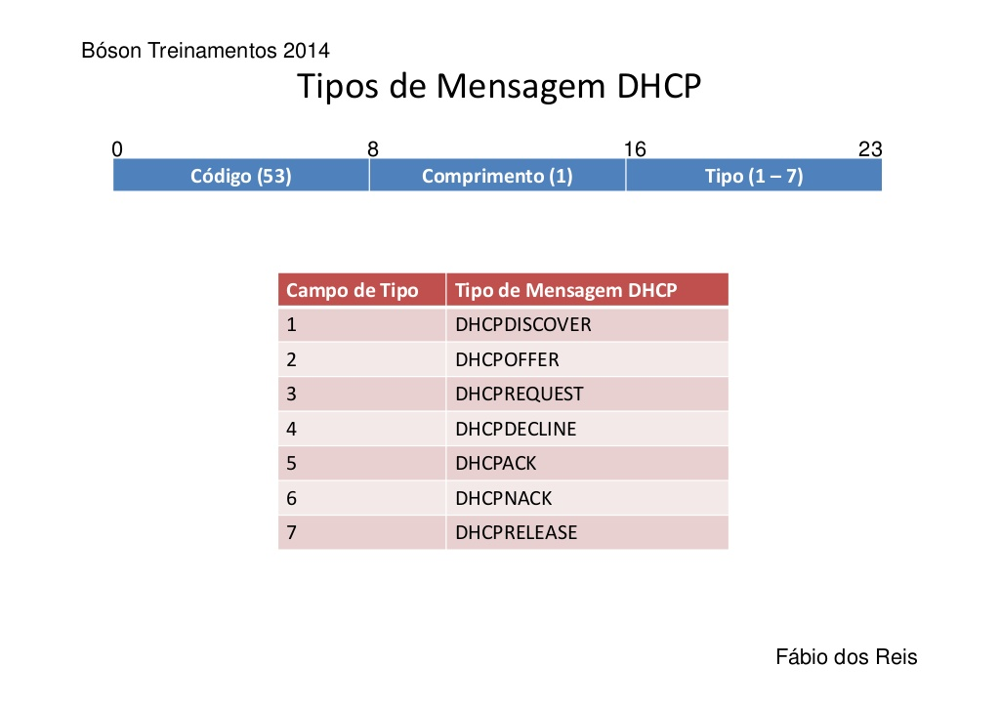

Aprenda Redes
Tudo sobre Redes Parte 8
Tipos de Registros DNS - Resource Records
Os Resource Records são registros no banco de dados DNS que descrevem as características da zona ou do domínio, e também definem os tipos de dados armazenados no banco DNS. Há mais de 30 tipos de registros disponíveis, como endereço IP, aliases, etc.
Veja um exemplo de arquivo de definição de zona de exemplo:
$TTL 86400; Diretiva para TTL padrão
teste.com IN SOA admin.teste.com root.teste.com (
500; Serial Number
604800; Refresh
86400; Retry
2419200; Expire
60 ); TTL Mínimo
// admin = nome do servidor DNS
// teste.com = nome do domínio
teste.com IN NS admin.teste.com.
teste.com IN A 192.168.1.200
;@ IN A 127.0.0.1
;@ IN AAAA ::1
admin IN A 192.168.1.200
name IN CNAME name.teste.com
Os registros de endereços definem o endereço IP de um host. Mapeiram FQDN para IP. São os egisros mais consultados para resolução de nomes. A é endereço IPv4, e AAAA é o endereço IPv6. Um exemplo seria www.google.com.br. IN A 172.217.29.131.
O registro SOA (Start of Authority) está em toda zona. Esse registro contém campos TTL, classe e tipo, servidor autoritativo, pessoa responsável, serial number, refresh, retry, expire e TTL mínimo.
Veja pra que serve cada intem do registro SOA:
- Serial Number: Mostra quantas vezes a zona foi atualizada. Permite definir se é necessário realizar uma transferência de zona entre um servidor primário e secundário (por comparação de números seriais).
- Refresh: Mostra de quanto em quanto tempo o servidor secundário da zona verifica se a zona foi alterada.
- Retry: Quanto tempo após enviar uma requisição de transferência de zona o servidor secundário espera por uma resposta do servidor mestre antes de tentar novamente.
- Expire: Quanto tempo após enviar uma requisição de transferência de zona o servidor secundário continua a responder a consultas antes de descartas sua própria zona (zona invalidada).
- TTL Mínimo: Se aplica aos registros na zona quando um TTL não é especificado em um registro de recurso.
O registro de nameserver (NS) indica os servidores autoritativos para a zona, e também os servidores primário e secundário especificados no RR SOA. Também indica servidores para as zonas delegadas. Toda zona tem ao menos um registro NS na zona raiz (root).
O nome canônico (CNAME) é um alias (apelido) de um outro registro, nomes secundários, útil para registrar diversos serviços em um mesmo servidor no banco de dados do DNS. Por exemplo: www IN CNAME google.com.br ou ftp IN CNAME google.com.br.
O mail exchanger record (MX) é o nome de domínio DNS para um servidor de e-mail. Por exemplo IN MX mail.google.com.br.
O pointer record (PTR) é um registro de ponteiro, faz o processo inverso para A ou AAAA, mapeia IP para FQDN e está presente em um arquivo de zona reversa. Veja um exemplo abaixo:
$ORIGIN 1.168.192.IN-ADDR-ARPA.; diretiva de nome base
1 IN PTR roteador.teste.com
200 IN PTR admin.teste.com
50 IN PTR vendas.teste.com
O registro service resource record (SRV) permite especificar a localização de servidores para um protocolo, serviço ou donínio DNS específico. Por exemplo, registros que especificam quais hosts são os servidores web em uma rede. Sempre tem o formato _Serviço._Protocolo.Nome TTL Class SRV Prioridade Peso Porta Alvo, por exemplo _http._tcp.teste.com. 32 IN SRV 10 0 80 webserver.admin.teste.com.
O registro TXT permite associar um texto arbitrário com um hostname, é possível ter vários registros TXT para um mesmo hostname. Por exemplo admin.teste.com. IN TXT "CEO: admin@teste.com.br".
O que é um Endereço IP Privado
Para entendermos bem, veja a imagem abaixo:

Na imagem acima, o que está do lado esquerdo do tracejado é a parte pública, ligada a internet, que tem o IP público válido na internet (geralmente atribuído pelo provedor), não sendo usado em redes internas.
Do lado direito, está a parte privada, dentro da nossa rede local, onde usamos IPs privados nas nossas máquinas. Esses IPs não conflitam com os IPs públicos.
O NAT do roteador converte o IP público da operadora para o IP privado usado na rede local.
A IANA (Internet Assigned Numbers Authority) reserva blocos de endereços IP para uso em redes internas, sendo um bloco para redes classe A, um para classe B e outro para classe C, como segue:
| IP Inicial | IP Final | |
|---|---|---|
| Classe A | 10.0.0.0 |
10.255.255.255 |
| Classe B | 172.16.0.0 |
172.31.255.255 |
| Classe C | 192.168.0.0 |
192.168.255.255 |
Todas máquinas tem algum desses IPs, seja uma rede comporativa ou doméstica, a classe C geralmente é usada para pequenas redes.
Cada bloco desses tem uma capacidade diferente com relação ao número de hosts que pode suportar. por exemplo, o primeiro bloco (10.0.0.0) pode comportar mais de 16 milhões de endereços IP, ao passo que o bloco classe C (192.168.0.0) pode acomodar um pouco mais de 65 mil hosts.
Por este motivo podemos ter, literalmente, IPs ilimitados para configuração de redes locais diversas.
Por exemplo: Meu provedor de Internet atribui ao meu roteador um endereço IP público, digamos, 186.45.123.69 este IP é único no mundo. Porém, eu possuo cinco dispositivos que precisam acessar a Internet em minha rede interna. Como conseguir isso se só possuo um endereço IP público?
Para resolver este problema, atribuo endereços IP privados aos meus dispositivos (PC, notebook, tablet, etc.), e compartilho o IP público único que possuo entre todos eles. Quem faz a atribuição desses IPs é o roteador (ou outro dispositivo configurado como gateway padrão), via DHCP, o qual também realiza o compartilhamento do IP público.
Em sua casa você pode ter também diversos dispositivos em sua rede doméstica acessando a Internet, cada um com um IP privado - e que podem ser os mesmos IPs privados que os equipamentos da minha rede! - pois o que importa para o acesso á Internet é o IP público atribuído, que será diferente do meu.
Há também um quarto bloco de endereços IP privados, chamado de APIPA (Automatic Private IP Addressing), cujo intervalo de endereços vai de 169.254.0.0 até 169.254.255.255, e é usado para autoconfiguração de endereços IP quando um servidor DHCP não está presente na rede local. Com um IP nessa faixa, não conseguimos acessar a internet (o que ajuda a identificar problemas de conexão), mas podemos acessar outras máquinas na mesma rede local.
O mais comum é o Endereço de loopback, na faixa de endereços de 127.0.0.0 até 127.255.255.255 (o mais usado é o 127.0.0.1), que é, basicamente, usado para realizar testes no adaptador de rede. Os endereços na faixa de 0.0.0.0 até 0.255.255.255 também são reservados, mas sem uma aplicação específica.
Dê um ipconfig no prompt para verificar a configuração dos IPs do computador.
O que é o Protocolo DHCP
O DHCP (portas 67 e 68) é um protocolo de serviço TCP/IP que permite executar configuração dinâmica de hosts em uma rede. É sucessor do BOOTP. Permite conceder endereços IP, máscaras de sub-rede, gateway padrão, servidores DNS e muitas outras configurações aos hosts.
Em termos gerais, o protocolo DHCP permite configurar dinamicamente os clientes da seguinte forma:
- Um cliente de rede envia um pacote UDP em broadcast com um pedido de serviço DHCP.
- Os servidores DHCP disponíveis recebem esse pacote e respondem com diversas configurações como IP, máscara, gateway, DNS, etc.
Basicamente, o cliente faz um requisição DHCP e o servidor envia uma resposta DHCP,
A alocação do DHCP pode ser feita de três formas:
- Automático: IPs são atribuídos pelo servidor aos clientes na rede (sempre os mesmos).
- Dinâmico:Semelhante ao automático, mas com o tempo de uso de IPs restrito (lease).
- Estática:Endereços MAC de hosts são associados a IPs no servido para que sempre seja oferecido o mesmo IP ao host (reserva).
O DHCP usa as mesmas portas atribuídas pelo IANA ao protocolo BOOTP:
- UDP 67 para envio de dados do cliente ao servidor.
- UDP 68 para dados enviados do servidor ao cliente.
A operação do DHCP ocorre em quatro fases: Descoberta (DHCPDISCOVER), Oferta de Concessão (DHCPOFFER), Requisição (DHCPREQUEST) e Confirmação de Concessão (DHCPACK).
O cliente envia mensagens de broadcast para a rede em busca de um servidor DHCP. Conteúdo básico da mensagem:
srcAddr=0.0.0.0, srcPort=68 dstAddr=255.255.255.255, dstPort=67
E o MAC Address do cliente.
Após o servidor receber a requisição DHCP de um cliente, é enviada por ele uma mensagem DHCPOFFER. Conteúdo da mensagem:
srcAddr=IP do servidor, srcPort=67, dstAddr=255.255.255.255, dstPort=68
Além do:
- MAC Address do Cliente.
- IP oferecido pelo servidor, mais a máscara de subrede e duração da concessão.
O cliente então responde com uma DHCPREQUEST, requerendo as configurações oferecidas. Conteúdo básico da mensagem:
srcAddr=0.0.0.0, srcPort=68, dstAddr=255.255.255.255, dstPort=67
O servidor é identificado pelo IP, contido no campo de opções de DHCP da mensagem.
Quando o servidor recebe a mensagem DHCPREQUEST do cliente, envia um pacote DHCPACK a este com as configurações oferecidas, finalizando a configuração DHCP. O cliente verifica se o endereço fornecido não está em uso enviando um pacote ARP para a rede. Conteúdo básico da mensagem:
srcAddr=IP do servidor, srcPort=67, dstAddr=255.255.255.255, dstPort=68
Basicamente, o cliente manda o DHCPDISCOVER pro servidor, que devolve o DHCPOFFER, o cliente aceitando devolve o DHCPREQUEST e o servidor devolve o DHCPACK (aceitando a oferta e fornece o IP e outras configurações).
A concessão (lease time) é o tempo pelo qual um host pode usar as configurações recebidas. Antes do término da concessão, o cliente DHCP pode solicitar sua renovação por um período de tempo igual.
Após decorridos 50% do tempo de concessão, o host inicia o processo de solicitação de renovação, enviando pacotes DHCP para o servidor e pedindo a renovação de sua concessão atual. Caso o servidor DHCP não responda à solicitação de renovação, ao atingir 75% do período de concessão, o host inicará o processo de obtenção de IP a partir de outros servidores (possivelmente) presentes na rede.
Veja o formato da mensagem DHCP logo abaixo:
Os campos da mensagem DHCP são esses:
- OP: Operation Code. Especifica se a mensagem é uma requisição (request - 1) ou uma resposta (reply - 2).
- HTYPE: Especifica o tipo de hardware de rede (Ethernet, HDLC, Frame Relay, ATM, etc).
- HLEN: Hardware Adress Length. Tamanho do endereço de hardware (MAC). Exemplo: Ethernet = tipo 1, tamanho 6.
- HOPS: Usado por agentes de relay para controlar o encaminhamento de mensagens DHCP.
- ID da Transação (XID): Contém um número inteiro de 32 bits usado pelos clientes para sincronizar respostas com solicitações.
- Segundos: Número de segundos desde que o cliente tentou adquirir ou renovar uma concessão.
- Flags: Se um cliente não souber seu próprio IP ao enviar sua requisição, a flag terá o valor 1. Indica ao servidor se sua resposta deve ser enviada em broadcast.
- Endereço IP do Cliente (ClAddr): IP conhecido do cliente, configurado em 0 se o cliente não possuir IP.
- Seu Endereço IP (YlAddr): IP que o servidor está atribuindo ao cliente.
- Endereço IP do Servidor (SlAddr): Endereço IP do servidor que o cliente deve usar na sequência de boot (pode ou não o próprio DHCP).
- Endereço IP do Roteador (GlAddr): Endereço IP do roteador que roteia mensagens DHCP (Relay Agent).
- Endereço de Hardware do Cliente (CHAddr): Endereço MAC do cliente.
- Hostname do Servidor (SName): Nome do servidor DHCP.
- Boot File Name: Usado para especificar um caminho de arquivo de boot.
Sobre o campo de opções DHCP, cada opção consiste em um campo de código de um byte e um campo de comprimento de um byte também, seguido por alguns octetos de dados que descrevem a opção.
| Código | Nome | Comprimento |
|---|---|---|
| 1 | Máscara de Sub-rede | 4 Octetos |
| 3 | Roteadores (Gateway) | Múltiplos de 4 Octetos |
| 6 | Servidores DNS | Múltiplos de 4 Octetos |
| 7 | Servidores de Log | Múltiplos de 4 Octetos |
| 15 | Nome de Domínio | 1 Octeto, no Mínimo |
| 28 | Endereço de Broadcast | 4 Octetos |
| 37 | TTL Padrão TCP | 1 Octeto |
| 42 | Servidores NTP | Múltiplos de 4 Octetos |
| 48 | Servidores de Fontes x Window System | Múltiplos de 4 Octetos |
| 69 | Servidores SMTP | Múltiplos de 4 Octetos |
| 70 | Servidores POP3 | Múltiplos de 4 Octetos |
| 58 | Tempo de Renovação de Concessão | Múltiplos de 4 Octetos |
Veja uns Exemplos de Opções, que podem ser identificadas pelos códigos:
| Código da Opção | Comprimento | Dados |
|---|---|---|
| 03 | 04 | 192.168.1.1 |
| 06 | 04 | 192.168.1.100 |
| 42 | 04 | 200.160.0.8 |
O tipo de mensagem DHCP também é determinado no campo de opções pelos seguintes campos e valores: Código 53, comprimento 1 e dados (que é o valor que identifica a mensagem DHCP enviada).
Veja os tipos de mensagens DHCP logo abaixo:
O endereço de auto-configuração (APIPA) trata-se do endereço IP de auto-configuração de hosts, que são os endereços da faixa 169.254.0.1 até 169.254.255.254. Caso um host esteja utilizando um endereço dessa faixa, provavelmente trata-se de problemas de comunicação com o servidor DHCP.
Um endereço IP dinâmico pode ser reservado para uso exclusivo de um host, no processo conhecido como reserva de IP. Para isso o servidor DHCP registra em uma tabela o endereço MAC do host e o IP que ele utilizará. Desta forma, o endereço deste host nunca mudará e não necessitará de configuração manual por parte de usuário.
Um escopo DHCP nada mais é do que a faixa de IPs que serão distribuídos a uma sub-rede em particular, mais uma máscara de sub-rede, por exemplo: Faixa de 192.168.1.20 a 192.168.1.40, com máscara de sub-rede 255.255.255.0. Cada sub-rede terá seu próprio escopo DHCP.
No servidor podemos verificar o nome das máquinas conectadas, seus IPs Privados, MAC e a concessão das mesmas.